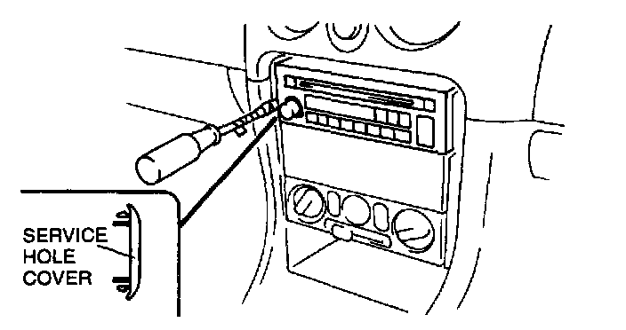
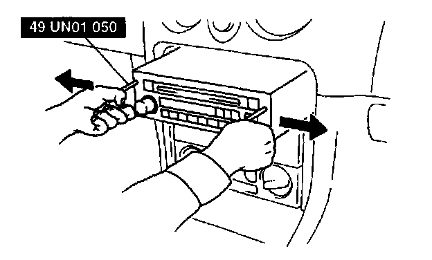

Radio, Stereo, and Compact Disc: Service and Repair
AUDIO UNIT REMOVAL1. Disconnect the negative battery cable.

2. Remove the service hole covers by inserting a small tape-wrapped flathead screwdriver into the slot and carefully pry them off without scratching the center panel. Pry up and pull off the service hole covers carefully to prevent the posts from breaking off.
3. With the beveled parts of the SST (removing tool) facing inward, insert them into the unit.

4. Pull the SST (removing tool) outward and forward to slide out the unit.
5. Disconnect the connectors and antenna jack.
AUDIO UNIT INSTALLATION
CAUTION:
- Make certain that the wiring harness and antenna feeder are not caught between the unit and dashboard. If the harness or the antenna feeder is caught between the unit and dashboard, it may become the cause of trouble or malfunctions.
- To install the audio unit, be sure to push the service hole cover areas on both sides of the audio unit. If the switches are pressed instead, it may become the cause of trouble or malfunctions.
1. Connect the connectors and antenna jack.
2. Insert the unit until each clip clicks.
3. Install the service hole covers.
4. Connect the negative battery cable.